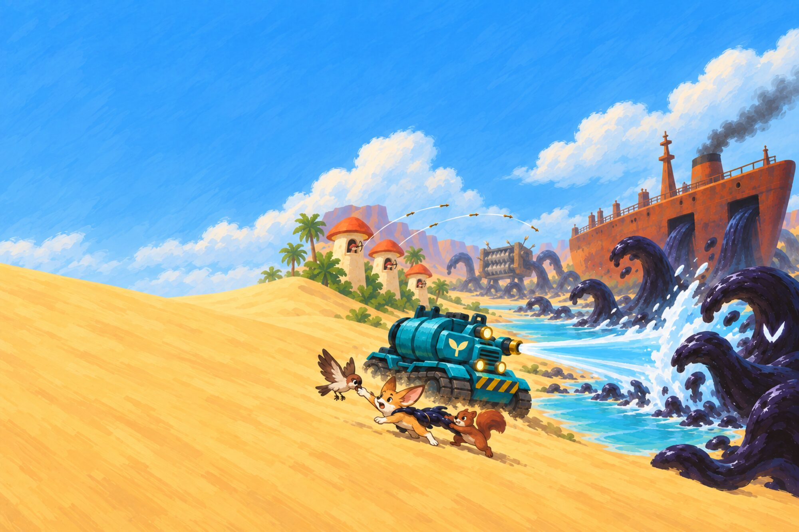
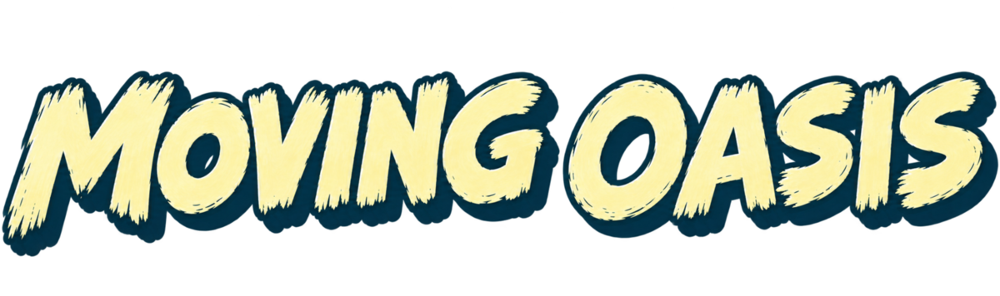
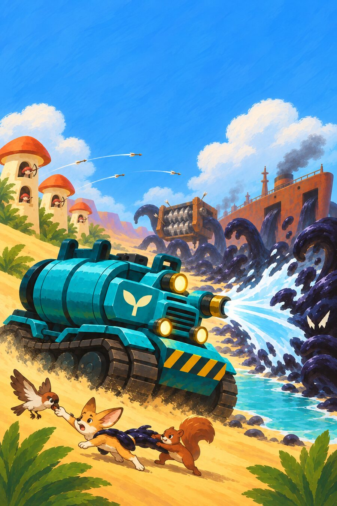

Drive a water tank across a world drowned in living goo, and grow it back to life.
Moving Oasis
A black goo is pouring out of a beached oil tanker and swallowing the land. You drive the one thing that can push it back: a water tank with a big brass nozzle.
Water is a force here. Aim the jet and the goo is shoved away, leaving clean wet ground where plants take hold. Wake sleeping mushroom towns, link them with threads of mycelium so they share their water, and help the land fight back.
Spray the goo back
A jet you can feel: push, wash, soak and grow.
Wake the fungal cities
Grow them, choose what they build, and join them into one living network.
Save the critters
Foxes, birds, squirrels, cats and tanuki caught in the goo.
- Single player
- PC and Steam Deck
- Mouse, keyboard or controller
- English and Polish

Fungalware
Fungalware is a one-person games studio making strange, hopeful games about living things: mould, moss, mycelium and the creatures that live in between.
Moving Oasis is our first game. It is made in C with SDL2, with a lot of help from AI tools for code and art, all directed by hand.